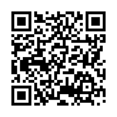
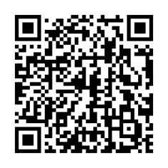

🎨 Prototipos de Baja Fidelidad: El Arte de Fallar Rápido para Triunfar Temprano
¡Imagina esta historia! 💡 En 1995, Jeff Hawkins tenía una gran idea para crear un asistente digital de bolsillo (el antepasado de nuestros smartphones). Pero en lugar de contratar programadores y gastar millones en microchips, agarró un trozo de madera 🪵, lo cortó al tamaño de su bolsillo y usó un palito como lápiz óptico. Durante semanas caminó usando su "bloque de madera" en reuniones simuladas para saber si la gente realmente llevaría un dispositivo así antes de escribir una sola línea de código. ¡Así nació la legendaria Palm Pilot!
Un prototipo de baja fidelidad es exactamente eso: una representación rápida, deliberadamente sencilla y de bajo costo (usando papel, marcadores, tarjetas o bocetos digitales) diseñada para hacer visibles las ideas, probarlas con usuarios reales y equivocarse cuando corregir cuesta centavos y no miles de dólares. 📝✏️
🤝 Trabajo Colaborativo en Diseño de Interfaces

Figura 1. Diseño y prueba colaborativa de prototipos de baja fidelidad. Fuente: IA (2026).
El prototipo no reemplaza los requerimientos: les da vida. Permite descubrir pasos innecesarios, botones confusos y términos ambiguos antes de que el equipo de desarrollo comience a programar. 🚀
✨ ¡Tu misión en este OVA: Te convertirás en un Diseñador UX y Arquitecto de Información. Aprenderás las convenciones universales de wireframes, crearás flujos en papel para aplicaciones reales y ejecutarás pruebas del "Mago de Oz" con usuarios simulados. ¡A bocetar! 🎨
🎯 Objetivos de Aprendizaje
Al completar este OVA interactivo, habrás desarrollado las siguientes competencias en prototipado de software:
-
🧠
Propósito y Alcance Explicar el propósito, las ventajas y los límites técnicos de un prototipo de baja fidelidad.
-
✏️
Bocetado de Wireframes Representar información, acciones, estados y recorridos mediante bocetos simples y convenciones estándar.
-
🛠️
Construcción desde Requerimientos Construir flujos de pantallas completos a partir de requerimientos del sistema y criterios de aceptación.
-
🧪
Prueba e Iteración con Usuarios Probar prototipos con usuarios simulados, registrar hallazgos observables y ajustar el diseño conservando trazabilidad.
Misión: Arquitecto UX & Prototipado Rápido
Explora los acordeones, resuelve los retos de alambre y acumula XP
Un prototipo de baja fidelidad es un modelo de aprendizaje rápido. No busca verse bonito, sino responder preguntas críticas sobre la experiencia del usuario. 💡

Figura 2. Ciclo básico de prototipado: Diseñar ➔ Probar ➔ Aprender ➔ Iterar. Fuente: IA (2026).
3.1.1 Qué Representa 🖼️
La estructura de pantalla, orden de información, acciones disponibles, mensajes del sistema y la navegación entre pasos.
3.1.2 Qué Permite Validar ✅
Comprensión de pantallas, ubicación de botones, correspondencia con la tarea real y manejo de errores.
3.1.3 Qué NO Demuestra 🚫
Velocidad de carga, seguridad, integración con bases de datos ni atractivo estético definitivo.
Caso Real: El Prototipo de 3 Minutos de Dropbox
En 2007, sincronizar archivos en la nube era extremadamente complejo de programar. El fundador de Dropbox, Drew Houston, antes de codificar la infraestructura, creó un video simple con capturas dibujadas simulando la sincronización. ¡Ese prototipo de 3 minutos hizo explotar su lista de espera de 5,000 a 75,000 usuarios en una noche! 📈
⚔️ Mini-Juego 1: Verdad o Mito sobre los Prototipos +50 XP por acierto
Clasifica la siguiente afirmación: "Un prototipo en papel demuestra que el sistema es seguro contra hackeos."
Fundamentos del Paper Prototyping en UX
🔍 Búsqueda sugerida: "Paper prototyping UX design ejemplos español"
▶️ Ver recurso💡 Cómo activar este recurso:
Busca el recurso y dile esto a tu agente de IA en el chat:


✍️ Misiones Prácticas de Prototipado
Demuestra tus habilidades de diseño UX realizando estas actividades de bocetado y prueba con usuarios.
🎮 Progreso de misiones
⭐ 0/100 XP🏅 Insignia desbloqueada: Diseñador UX
🎨 Actividad 1: Construcción de Prototipo en Papel
Misión en EquipoDesafío: Diseña un flujo de 4 a 6 pantallas en papel para la solicitud de un certificado académico. Utiliza las convenciones de wireframes estudiadas (rectángulos, flechas, placeholders y notas adhesivas).
📐 Simulador de Verificación de Wireframe:
📝 Producto Esperado: Prototipo de papel escaneado/fotografiado con mapa de navegación de pantallas y matriz de trazabilidad con requerimientos.
🧪 Actividad 2: Prueba Cruzada "Mago de Oz" y Acta
Simulación de RolDesafío: Intercambien prototipos con otro equipo. Un integrante será el Usuario, otro el Facilitador ("Mago de Oz") y otro el Observador. Registren 5 hechos observables durante la prueba.
📋 Generador de Formato de Prueba de Usabilidad
📝 Producto Esperado: Formato de prueba diligenciado con hechos observados, priorización de hallazgos y boceto de pantallas rediseñadas (Versión 2.0).
✔️ Evaluación de Conocimientos
Responde las 5 preguntas de nivel progresivo para validar tus competencias en prototipado de baja fidelidad.
📖 Recursos para Profundizar
Consulta los siguientes estándares internacionales y libros recomendados sobre prototipado y UX:
-
IREB: Estándar Internacional de Ingeniería de Requisitos
Programa oficial sobre técnicas de prototipado y validación de requisitos de software.
Ir al recurso -
Design Sprint: Prototipado en 5 Días (Google Ventures)
Metodología ágil creada por Jake Knapp para validar grandes ideas mediante prototipos rápidos.
Ir al recurso
-
El Diseño de los Objetos Cotidianos (Don Norman)
Obra cumbre sobre usabilidad, diseño centrado en el usuario y prevención de errores de interfaz.
Ir al recurso -
Guía Práctica de Paper Prototyping
Artículos y plantillas descargables para la realización de pruebas de usabilidad en papel.
Ir al recurso